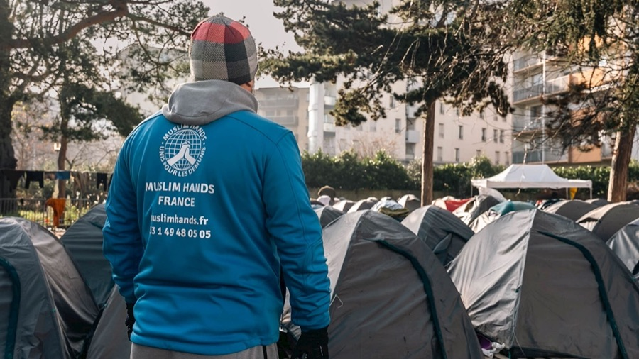
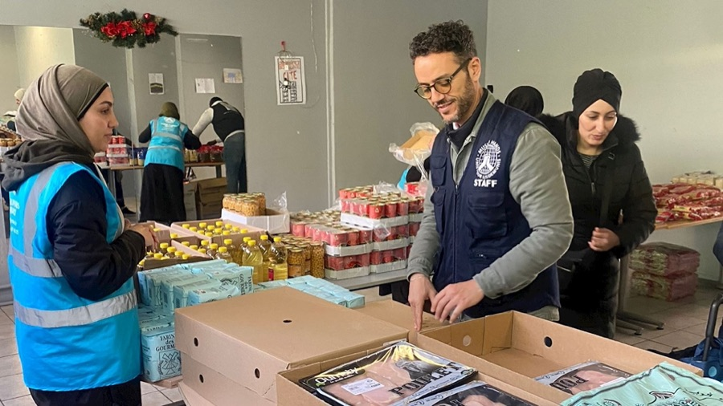
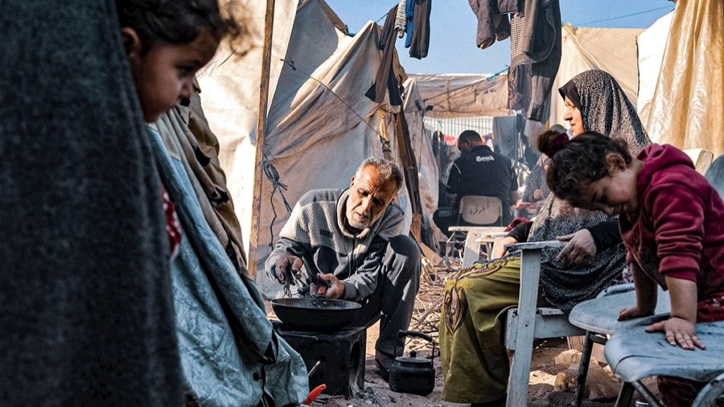
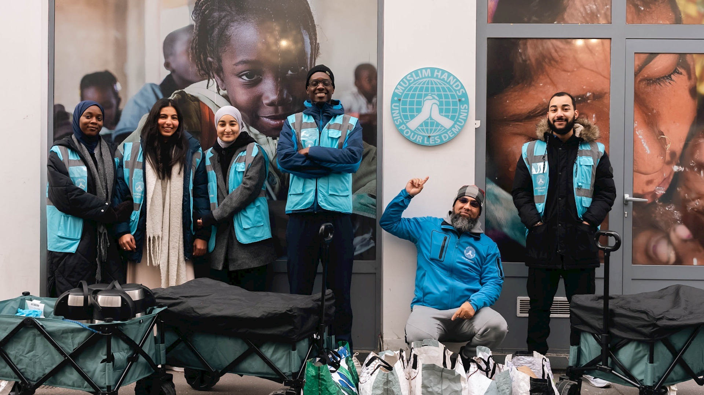
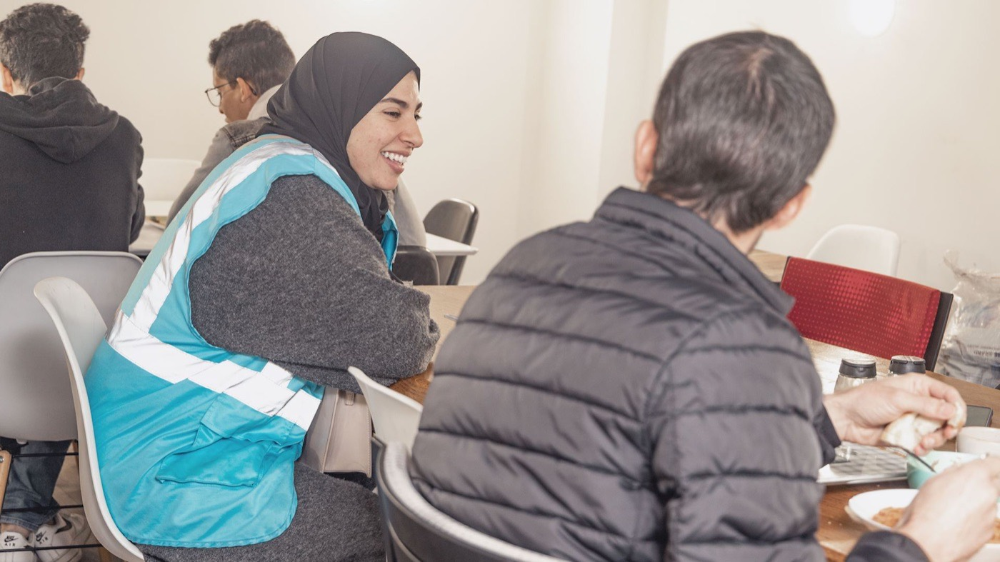
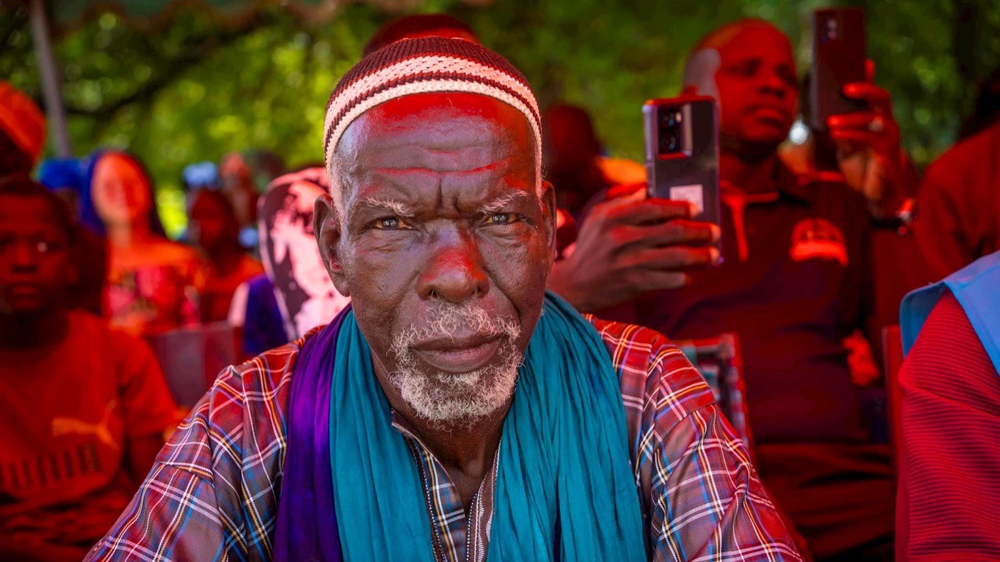

- 30 € le colis, soit 7,50 € après réduction d'impôt de 75 %
- Distribué par nos bénévoles dès la semaine suivante
- Reçu fiscal immédiat par e-mail
Trois gestes, du repas chaud à la mise à l'abri
Chaque montant correspond à un achat précis, fait en gros par notre équipe logistique. Le reçu fiscal réduit votre coût réel de 75 %.

Un repas chaud servi en maraude ou à table, à La Fourchette Fraternelle de Marseille.
Offrir un repas
Un colis chaleur : duvet grand froid, bonnet, gants, chaussettes, thermos et kit d'hygiène.
Offrir un colis
Une semaine d'hébergement pour une famille pendant une vague de froid, avec nos partenaires.
Mettre à l'abri
Un colis, une nuit au chaud.
30 € achètent un duvet grand froid, un bonnet, des gants et un thermos. Après impôt, le colis vous coûte 7,50 €.
Offrir un colis chaleurPourquoi une campagne hiver ?
En France, plus de 330 000 personnes n'ont pas de domicile. Quand la température descend sous zéro, dormir dehors devient dangereux : chaque hiver, des centaines de personnes sans abri meurent dans la rue. Les centres d'hébergement sont saturés dès novembre. Un duvet grand froid, un repas chaud, un thermos de thé et quelqu'un qui s'arrête pour parler : c'est ce que nos bénévoles apportent, trois soirs par semaine, de novembre à fin février.
La campagne hiver finance les maraudes à Paris, à Lyon et à Marseille, les colis chaleur, les repas chauds de La Fourchette Fraternelle et, pendant les vagues de froid, la mise à l'abri de familles à l'hôtel avec nos partenaires. Elle est renouvelée chaque année sur cette même page.

Fonds hiver · 75 % déductible
30 € vous coûtent 7,50 € après réduction d'impôt de 75 %.
Je donne pour l'hiverDispositif Coluche : 75 % jusqu'à 2 000 €, puis 66 % · reçu fiscal immédiat
Pourquoi 75 % de réduction d'impôt ?
Les dons qui financent la fourniture gratuite de repas, de soins ou d'un hébergement aux personnes en difficulté bénéficient du dispositif « Coluche » : 75 % de réduction d'impôt jusqu'à 2 000 € par an, puis 66 % au-delà, dans la limite de 20 % du revenu imposable. Nos maraudes, nos colis chaleur et La Fourchette Fraternelle y sont éligibles. Concrètement, un colis à 30 € vous coûte 7,50 €, et 1 000 € de dons vous coûtent 250 €. Le reçu fiscal est envoyé par e-mail immédiatement après le don. Simuler mon don et comprendre les deux taux.

Où et quand nous sommes dans la rue
Paris et Saint-Ouen
Maraudes trois soirs par semaine, distributions gare du Nord et porte de la Chapelle, colis préparés au siège de Saint-Ouen.
Lyon
Maraudes à la Part-Dieu deux soirs par semaine et accompagnement de 175 mineurs non accompagnés.
Marseille
Repas chauds à table à La Fourchette Fraternelle, maraudes dans le centre et autour de la gare Saint-Charles.
Vagues de froid
Dès que le plan grand froid est déclenché, les maraudes passent à tous les soirs et des nuits d'hôtel sont réservées pour les familles.
Que finance mon don, en détail
| Don | Ce qu'il permet | Coût après impôt | Fiche |
|---|---|---|---|
| 5 € | Un repas chaud en maraude ou à La Fourchette Fraternelle | 1,25 € | Donner |
| 30 € | Un colis chaleur complet pour une personne | 7,50 € | Donner |
| 60 € | Deux colis chaleur, ou douze repas chauds | 15 € | Donner |
| 150 € | Une semaine d'hébergement pour une famille pendant une vague de froid | 37,50 € | Donner |
| 300 € | Une maraude complète : 60 repas chauds, thé et kits d'hygiène | 75 € | Donner |
Bilan de l'hiver dernier
De novembre 2025 à février 2026, 1 800 personnes sans abri ont été accompagnées dans les trois villes et 30 000 repas chauds servis. Nos bénévoles ont distribué des colis chaleur, des duvets et des vêtements chauds, et des familles ont été mises à l'abri à l'hôtel pendant les deux vagues de froid de janvier. Les comptes de la campagne figurent dans le rapport annuel.

Giving Tuesday : le 1er décembre 2026, votre don compte double
Le mardi 1er décembre 2026, journée mondiale de la générosité, chaque don au fonds hiver est doublé par un mécène jusqu'à 20 000 €. Un colis offert ce jour-là en vaut deux. Notez la date, ou programmez votre don dès maintenant : il sera prélevé le 1er décembre. Voir tous les événements.

« La première fois, j'avais peur de ne pas savoir quoi dire. On m'a expliqué : tu tends le thermos, tu dis bonsoir, tu écoutes. C'est tout. »Inès, bénévole maraude depuis trois hivers, Paris
Et après l'hiver ?
Le froid passe, la rue reste. Le fonds solidarité France finance toute l'année La Fourchette Fraternelle, les maraudes, les iftars solidaires et l'accompagnement des mineurs non accompagnés à Lyon et à Paris. Un don mensuel de 10 € à ce fonds, soit 2,50 € après impôt, assure deux repas chauds chaque mois.

Questions fréquentes sur la campagne hiver
Que contient un colis hiver ?
Un duvet grand froid, un bonnet, des gants, des chaussettes chaudes, un thermos et un kit d'hygiène (savon, brosse à dents, lingettes). Il coûte 30 €, soit 7,50 € après réduction d'impôt de 75 %.
Pourquoi mon don est-il déductible à 75 % et non 66 % ?
Les dons qui financent la fourniture gratuite de repas, de soins ou d'un hébergement aux personnes en difficulté bénéficient du dispositif « Coluche » : 75 % de réduction d'impôt jusqu'à 2 000 € par an, puis 66 % au-delà. Nos maraudes, nos colis et La Fourchette Fraternelle y sont éligibles.
Quand et où a lieu la campagne hiver ?
Du 2 novembre 2026 au 28 février 2027, à Paris et Saint-Ouen, à Lyon et à Marseille. Les maraudes ont lieu trois soirs par semaine à Paris et deux soirs par semaine à Lyon et à Marseille, plus souvent en cas de vague de froid.
Puis-je donner des vêtements ou des duvets plutôt que de l'argent ?
Oui, en les déposant au siège de Saint-Ouen ou à l'antenne de Marseille, propres et en bon état. Un don financier reste plus efficace : nous achetons en gros des duvets adaptés au froid, au bon prix, et nous évitons le tri.
Comment devenir bénévole pour les maraudes ?
Remplissez le formulaire sur la page de nos actions en France. Une réunion d'accueil a lieu chaque mois dans chaque ville ; aucune compétence n'est requise, une soirée par mois suffit.
Qu'est-ce que le Giving Tuesday ?
Le mardi 1er décembre 2026, journée mondiale de la générosité, chaque don au fonds hiver est doublé par un mécène jusqu'à 20 000 €. Un colis offert ce jour-là en vaut deux.